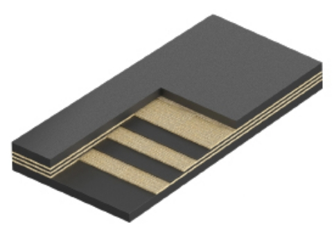

Сфера применения:
Износостойкая конвейерная лента для транспортировки высоко абразивных, остроконечных материалов, с высокой стойкостью к разрывам, износу и чистящим процедурам. Истирание 100 мм3.
Используемый эластомер: И
- 1.2И – для тяжелых условий эксплуатации (с брекерной прокладкой)
- 2И – для средних условий эксплуатации
- 2ЛИ – для легких условий эксплуатации
* Характеристики продукции носят информационный характер, при заказе просьба уточнять у менеджеров нашей компании.
| Тип ленты | Тип ткани прокладки | Количество прокладок | Прочность на разрыв Н/мм | Дата окончания |
| 1.2И, 2И | ТК-200-2, ТЛК-200-МА | 4 | 800 | РБ, НБ |
| 1.2И, 2И | ТК-200-2, ТЛК-200-МА | 4 | 800 | РБ, НБ |
| 1.2И, 2И | ТК-200-2, ТЛК-200-МА | 4 | 800 | РБ, НБ |
| 1.2И, 2И | ТК-200-2, ТЛК-200-МА | 4 | 800 | РБ, НБ |